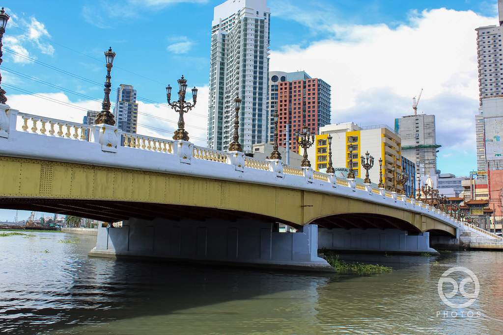

The Jones Bridge was formerly known as the Puente de Espana, crosses the Pasig River and connects Manila's Binondo and Santa Cruz districts with the city's downtown. Today this bridge is considered the oldest in the Philippines. Initially, the bridge, consisting of 7 arched spans, was called Puerto Grande - it was built in 1632 by the Spanish colonialists, and became the first bridge across the Pasig River. It was built of wood and connected the Binondo area with the ancient Intramuros area of Manila, allowing residents to move faster and easier from one part of the city to another. The Jones Bridge is named after the United States legislator William Atkinson Jones, who served as the chairman of the U.S. Insular Affairs.
Jones Bridge is a historic bridge located in the heart of Manila, connecting the districts of Binondo and Ermita. Here are some of the things that make Jones Bridge special:
History: Jones Bridge has a rich history that dates back to the American colonial period in the Philippines. It was named after William Atkinson Jones, an American Congressman who sponsored the Philippine Autonomy Act of 1916.
Architecture: Jones Bridge is a beautiful example of neoclassical architecture, featuring ornate pillars, balustrades, and other design elements that make it a popular spot for photography.
Location: Jones Bridge is located in a prime location in Manila, providing stunning views of the Pasig River and the city skyline. It is also near several major tourist destinations, such as Intramuros, Rizal Park, and Binondo.
Pedestrian-friendly: In recent years, Jones Bridge has undergone renovations to make it more pedestrian-friendly. The bridge now features wider sidewalks, bike lanes, and other amenities that make it a pleasant place to walk or bike.
Cultural Significance: Jones Bridge is considered an important cultural landmark in Manila, representing the city's past and its ongoing transformation. It has been the site of numerous cultural events and activities, including festivals, concerts, and art exhibits.
Overall, Jones Bridge is a beautiful and historically significant landmark in Manila that is worth visiting for its architecture, location, and cultural significance.